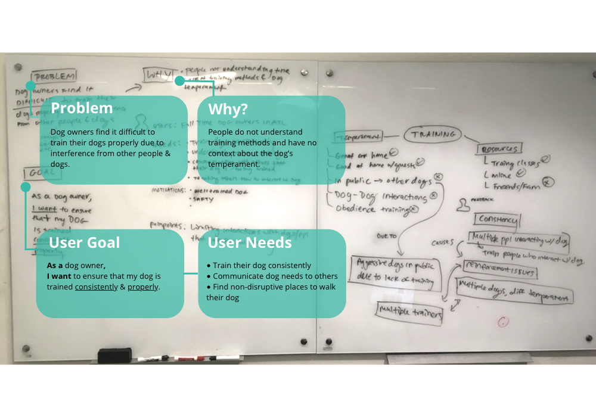
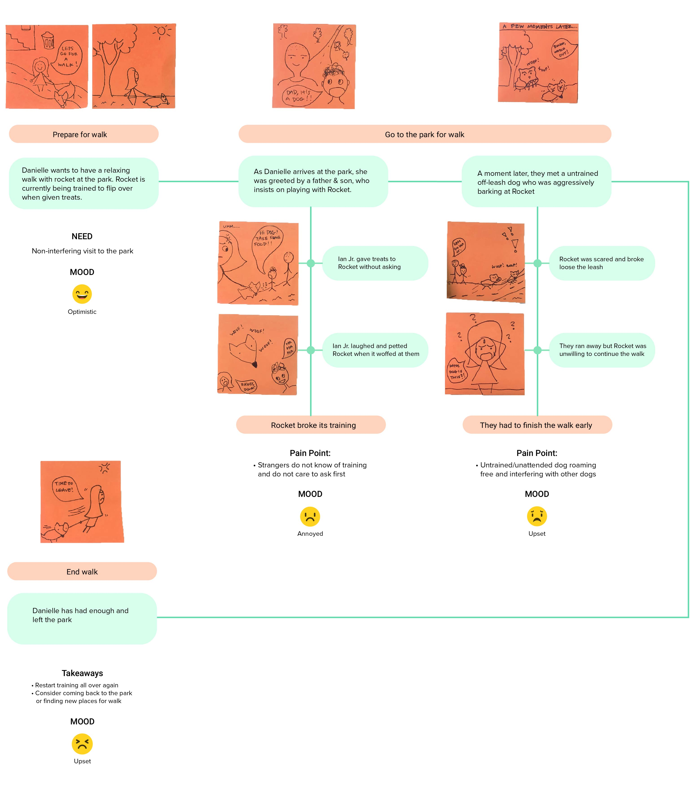
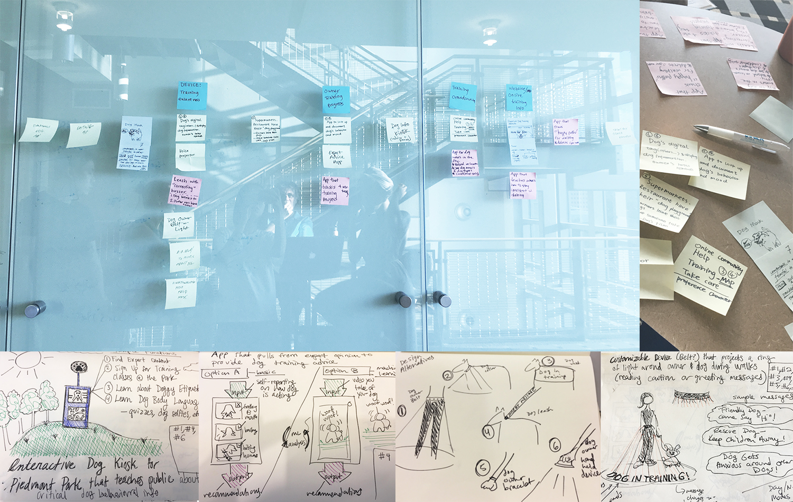
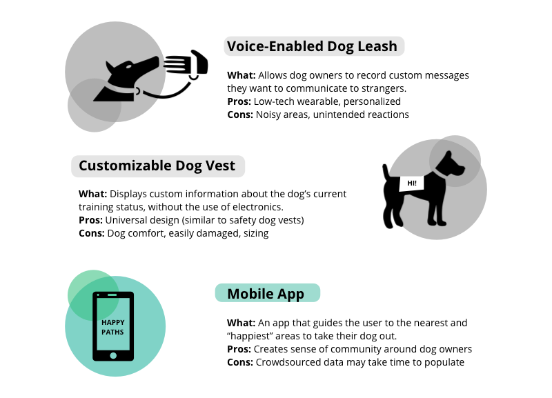
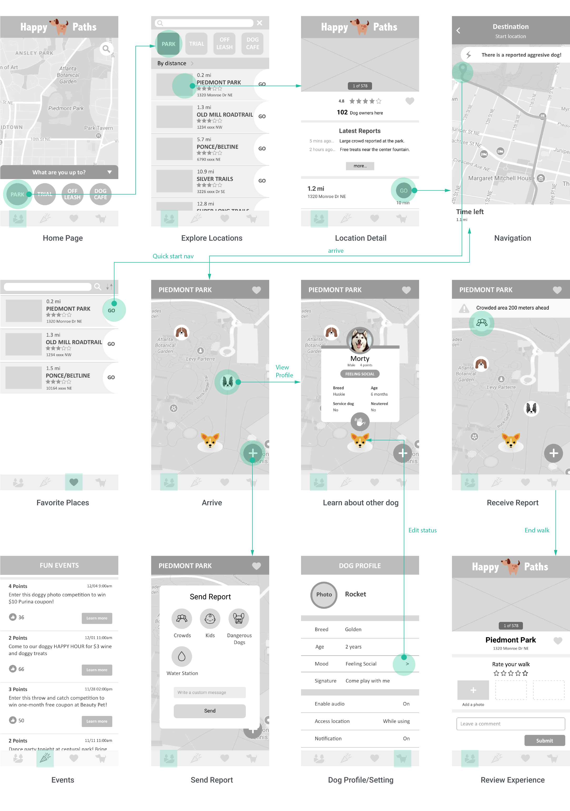
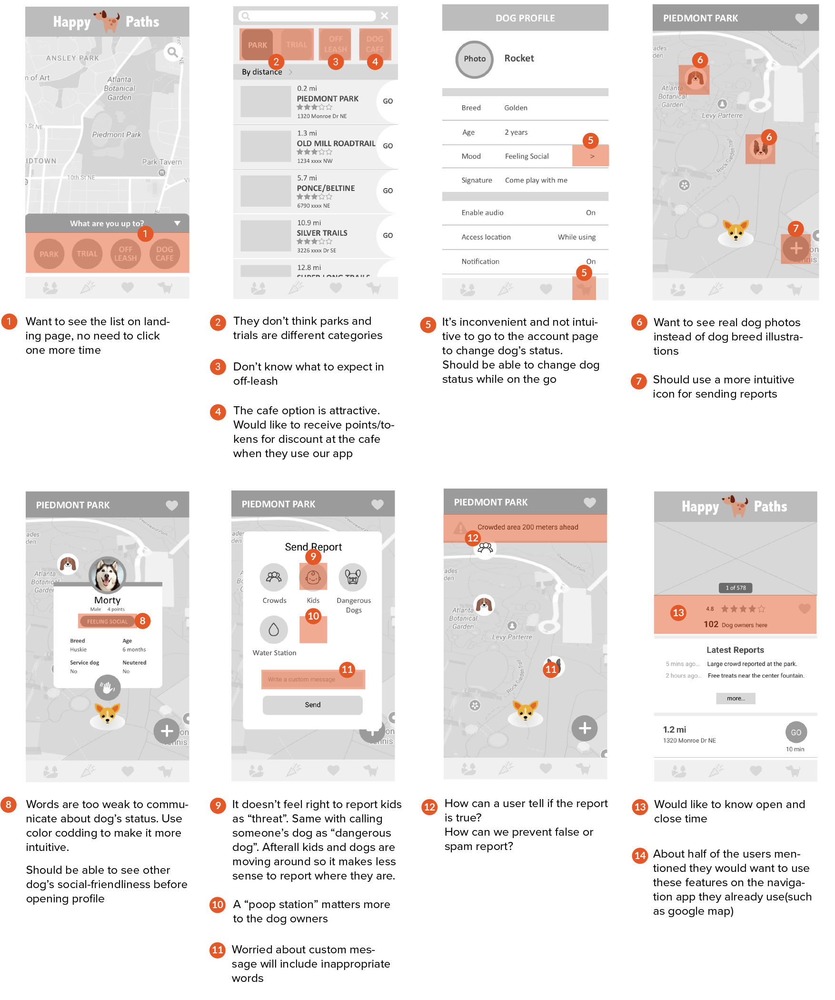

research, app design
happy paths
| Role | Researcher, Designer |
| Team | Lindsay Kelly, Zheru Jiang, Darren Yee, Rich Down |
| Purpose | HCI Foundations Class Project @ Georgia Tech |
| Duration | 5 months |
A Google Maps plug-in for urban dwelling dog owners.
- Find non-disruptive routes to walk your dog
- Get alerts about crowded areas along the way
- Inform others about your dog's temperament
The Problem
Dog owners living in the city of Atlanta struggle to find nearby uncrowded places to walk their dog, as well as communicating to others the temperament and special needs of their dog when in public. These dog owners struggle to properly train their dogs during 'outdoor time' due to the interference of other dogs and dog owners.
Process
Research
Interviews
In order to explore the problem space, our team set out to various parks in atlanta to observe and approach dog owners for short interviews. We chose to conduct interviews in the field so that we could get qualitative data from participants while they were in the context of the problem space. The interview was semi-structured and was focused on asking general questions about their daily routines with their dogs.
Surveys
After the interviews, we conducted an online survey with 30 participants in order to provide more concrete quantitative evidence about the problem space. We also wanted to get better sense of who our users were, their demographics, and their characteristics. Our survey also gave us further insights on why they struggled to train their dogs.
What we found
Training Interference Dog owners find it difficult to take their dogs out while keeping dog's behavior and emotion stable, due to interference from other people and dogs that are not aware of the current training, nor of the dog's temperament.
Creating Design Objectives
Whiteboarding
In order to form a narrative based on our data, I led the team through an hour long whiteboarding session to review the coded data and define our user goals/needs/motivations. The whiteboarding session allowed the team to come together to review and summarize the coded data.
Storyboard
We then created a storyboard to easily communicate our research findings through personas that were abstractions of our data. This served as an entry point into the bigger picture of the user needs.
Ideation
Diverge & Converge
We chose to leverage the two phases of group problem-solving, divergence and convergence. By diverging, we individually generated as many ideas as possible before converging and using affinity mapping to discuss and narrow down ideas. Through creative thinking and brainstorming, we were able to get creative with design ideas and to maximize the unique contributions and ideas of the entire team.
Design Alternatives
After brainstorming as a group, we landed on three different alternatives that met our users' goal and addressed their needs. We chose the app option because it was the most feasible for the allotted timeframe.
Design & Evaluation
Our final app design is based on our design objectives and research conducted. The app, Happy Paths, allows dog owners to share the status of their dogs to others around them and displays real-time information about nearby trails and parks.
User Flow
A/B Testing
We created two versions of our app before testing. A Standalone and a Google Plugin version. Given the fact that our solution would be map based, we wanted evaluate whether or not user's prefer integrating the design with an existing navigation platform. We tested both of our designs through in-context usability studies where we handing the prototype to participants while they walked their dogs.
Findings
- 75% of participants preferred the Google Maps Plugin version. 25% had no preference.
- Learnability: Users were skeptical about the learnability of various design elements icons.
- Emotional Connection: Users were most emotionally connected with the features that allowed them to see how crowded areas were, and the ability to quickly change their dogs moods.
Overview of Feedback
Final Design
Get Started Tap on the icon in Google Maps to begin.
Explore Browse through nearby parks, trails, cafes.
Discover Get a real-time view of how crowded the areas are and how long the walk will take.
Arrive Arrive at your destination and see other dogs and their temperaments.
Report Share updates about the area and the dogs that you encounter in that area.
Learn Tap on the dogs on the map and see personal information that the owner has decided to share.